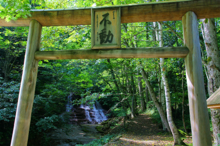

松緑神道大和山/青森県
世界で二番目に広大な宗教施設が日本にある。
…高野山？ノンノン。天理？ノーノー。
青森県の山の中、なのですよ。その教団の名は松緑神道大和山。
大正時代に立教されたいわゆる新宗教である。
その面積は1800ヘクタール。東京ディズニーランドの35個分、奈良公園3つ分に相当する。でかいすね。
ちなみに世界一はユタ州のモルモン教ね。
世界ナンバー2の（敷地面積の）教団っていったいどんなだろう？人知れず天理市みたいな凄い宗教都市が出来上がっているのだろうか？
…気になって仕方がないので確認しに行ってみたよ。
青森市街から東に約20キロ。外童子山の山中に目的の教団はある。
カーナビにルートをお任せしていたら段々道は曲がりくねり、細くなり、終いには未舗装道になって来た。大丈夫か？カーナビ。
本当にこんな辺鄙なところに世界第二の面積を有する大教団があるのだろうか？
どうやら広大な敷地の真裏からアプローチしちゃった、みたい。
気がつけばいつの間にか敷地内に入っている、みたい。
カーナビの地図から判断すると恐らく教団の中心部はあの山の向こう。なんちゅう規模だ。
敷地は広大だが、そのほとんどは山林である。
植林や魚の放流などをしてある程度環境をコントロールしているようだが、見た目には手付かずの原生林にしか見えない。
つかこの看板↑がなければ教団の敷地内である事すら全く判らない。
道はますます曲がりくねり標高も高くなっている様子。
ちなみにこの時点で信仰関係の施設は一切ゼロ。というかこの看板以外に人工物さえ見当たらない。
頭の中にチラチラと浮かぶ「遭難」の二文字をムリクリ打ち消し先に進む。
しばらくしてやっと舗装道になり、教団の施設が現れる。
裏側から入ってしまったのでいきなりこの教団のヘソ、というか核心部分から見学する羽目になってしまった。

「不動」という額のかかった白木の鳥居の向こうには滝が見える。
鳥居の近くにはたくさんの草鞋が下がっていた。滝行をする際に履くのだろうか、それとも奉納されたものなのだろうか。
鳥居の前には小屋が建っている。着替えルームか。
で、滝である。不動滝という。信者の皆さんはここで滝行をするのだという。
小さな滝だが幾筋にも分かれていて不思議な形状の滝だ。信仰上特別な場所として捉えるのもわかります、わかります。
滝の近くには奥の院へ至る橋がある。
っと、熊出没注意!!
てなわけで、いきなり教団の核心部を先に見ちゃったが、ここでぐるっと回り込んで改めて本来の正面入口に向かう。
まず見えてくるのは光霊殿という建物。
教祖の霊を祀ってあるという。
次に現れるのはそれはそれはクラッシックな建物の高校。
主に教団の子弟が通う学校である。全寮制。
で、この大和山の案内図。
建物が建っているエリアは広大な敷地のごく一部だがそれでもご覧のように広大だ。
先ほどの「遭難」問題は杞憂に終わったが今度は「勧誘」という案件が浮上。
詳細が一切不明の新宗教である。妙なテンションで迫ってこられたらどうしよう…。
頭の中を走馬灯のように巡る過去のあんな修羅場やあんな修羅場。思えば教祖サマ大激怒！とか半軟禁！なんつーのもあったな…。
若干ビビりつつも受付に見学の由を申し出ると案外普通の対応。
休憩所のようなところで教団の概要のビデオを見てアウトラインの確認。
まあ、意味の判らない用語もあるが、開祖の「神を売り物とせず、信者を食い物とせず」という言葉に示されるとおり いたって穏健な教団のようで少し安心する。
この教団では多くの信者がこの地に住み、農耕や酪農などの生産活動をすることで共同生活を営んでいるという。
先ほどの学校も信者の子弟が通うのだろう。
共同体によるユートピア建設かぁ。
というわけで信者さんに内部を案内してもらう。温厚な普通のオバチャンだが長年この地に住んでいるという筋金入りのベテランだ。
もちろん私も子供じゃないので原始共産主義的な生産活動のみでこの規模の教団が維持、発展できるとは思っていない。そこには大量のオゼゼが必要だろう。
しかし秘境といっていい人里離れた土地で俗世と隔絶し、共同生活を送っている光景を目の当たりにすると、まるで日本という国の埒外にあるどころか貨幣価値や浮世のよしなし事にすら無縁なファンタジーの国に迷い込んだような気になる。
施設内に入ると最初に目に付くのが三層の小さな城。
荒風城といい昭和30年に「築城」された。
この城は様々な神が集う寄り代なのだという。
何で神様が城に集まるのかは判らないが、城と宗教って珍しい組み合わせだと思う。
それよりもなによりも実はミニチュアのお城が大好物の私。案内の信者さんに怪しまれぬよう心の中で小躍り。
小さな城、といっても高さは4〜5ｍ。漆喰壁に陶器の屋根をあしらった結構本格的なものだ。屋根の微妙な歪み具合がミニ城郭マニア心をくすぐりまくり、なのだが。
1層目の正面には小さな扉がある。中にはきっと大事なモノが入っているのだろう。信者の人はみなこの城の前を通る際には一礼をしていた。
屋根は四方に破風が切ってあり、何だか人が合掌しているように見える。
後ろの小川にかかる橋との組み合わせはどこか皇居の二重橋あたりの風景を連想させる。
このあたりは冬、相当厳しい寒さと積雪に見舞われるという。
人里離れたこの山間部で越冬するのは相当の覚悟がなければ出来ないことだろう。
私には到底理解できないが信仰の力とはげに強力なものなのだろう。
しばらくすると池のほとりにまたしても別の城が現れた。
先ほどとほぼ同じ形状の城だ。
今度は千吹城というそうな。
千吹城を前に色々説明してくれたベテラン信者さん。
何でもここには6つの城があるという。
ココで改めて先ほどの案内図を。
おおお、確かに6つの城があるぞ。
新宗教と城の関係は不明だが、こりゃ面白そうだ。先に進もう。
しばらく進むと巨大な建物が見えてきた。
神集閣という。
この教団のメイン施設と呼んで差し支えないだろう。2500人を収容できるホールがあり、仙台以北では最大の宗教建築だとか。
確かにでかい。
兜屋根のような形状も独特だ。
ちなみにここの教団の建物の屋根は全て緑色。教団名の松緑神道に因んでいるのだろうか。
内部は高級ホテルのロビーのような豪華な雰囲気だった。
ロビーには開祖や現教祖などの等身大の絵画があったのだが、よく見たらそれらが全部米や粟など穀物が貼り付けてつくられた五穀画だった。
これもまた信仰の成せる技か。ちょっとビックリした。
山奥での自給自足の共同生活、といった清貧っぷりとこの建物のゴージャスさのギャップが凄かったです。
さて、神集閣を出て再びお城巡り。
緑野城。
豊雲野城。
これで4つ目。これらの城は昭和30〜31年に築城された。
いずれも同じ大きさで形もほぼ一緒。ただし、城によって集まる神様が異なるのだとか。
傍らには夫婦御揃之塔なる石積みが。
こちらはご神水。
フランスの有名なルルドの泉よりも何かの成分が多く含まれているという説明を受けたが、詳しい事は忘れちゃいました。
飲んでみたけど普通に美味しかったです。
で、そのとなりにそびえるのが神集城。
今までの城よりも一際大きい。
5層構造である。
ここは先ほどまでの城と違い八百万の全ての神が集まる場所なのだとか。
先ほどの巨大なホールも凄かったが、こちらの城の方が遥かにこの教団を象徴しているように思えて印象深かった。
ところで。
先ほど城は6つある、と聞いたが、どうも5つしか見つからない。
その由を信者の方に尋ねると、遠くを指さすではないか。
みれば向こうの山の中腹に…
おおお、アレが第6の城かぁ！この城だけは昭和46年に建てられている。それにしてもあんな山中によく建てられたなあ。
そんなこんなで6つの城巡りを果たしすっかりご満悦な私。
しかしベテラン信者さんの案内はまだ終わらない。
次に案内されたのは御神木。
栃の木だという。
個人的にはこの木を取り囲むように建っている奇妙な塔というか灯篭のようなモノに目が釘付け。
先ほどからこの石をモルタルでモザイク状に固めたものが多いですね。教祖サマの好みなのだろうか。
こちらは悟見之塔。これもまた大小さまざまな石を用いてモザイク状の塔を作っている。
御神木の前には教団の原点とも言うべき掘っ立て小屋が保存されている。
大正時代、この地で炭焼をしていた開祖が天啓を受け修行をした小屋だという。
この教団がこんな辺鄙な山奥で活動をしているのは、そういう理由があったのだ。
新宗教では得てして特別な場所に特別な意味を付与するケースが多い。
その最たる例が天理教であろう。「ぢば」と呼ばれる場所を中心に宗教都市が建設され、同心円的な信仰地図が形成される。
ここ松緑神道大和山も教祖天小屋と呼ばれるこの小屋を信仰の中心としているようだ。
そういう意味では教祖サマが別の場所で天啓を受けていたらこの教団の様相も違っていたかもしれない。
教祖天小屋の中を覗き込むと質素オブ質素、としかいいようのない粗末な小屋であった。
今でこそ豪華な建物が建ち、大勢の信者が集い共同生活をしているが、立教当時は誰も訪れる人などない、今にも増して人外魔境の地であっただろう。熊出没注意！だし。厳冬地だし。
小屋の脇には7つの石が並んでいる。教祖が修行中に宗教界の先人の姿を見出した石を並べたものだとか。
さらにその裏には教祖が将来の教団の姿を思い描いた石庭がある。
この石庭は大正13年に作られた。
世捨て人のような生活をしていたであろうこの時期、自分を奮い立たせるために作ったのか、お告げにより確信を持って作ったのかは定かではないが、立派なホールより、広大な敷地よりも私はこの小さな石庭に感動した。
まだ小屋の他には何もない時期に教団の将来を思い描き、石を積んで作った石庭はまさに教祖の脳内を具現化した脳内楽園そのものである。
石庭は例によって石とモルタルを組み合わせて構成されている。
鳥居の先には大階段があり、その先には神殿のような建物がある。
その手前には数々の建物や塔が点在している。
世間に見向きもされず、山中で修行していた人物が作り上げた夢想の王国。
最寄の駅から専用の鉄道を敷き、大勢の人が来られるように計画していたようだ。
鉄道と平行して運河を設け帆掛け舟を渡す計画も。
残念ながらこれらの計画は実現しなかったが、その代わり世界第二の面積を誇る大教団になったわけで。
稚拙な石庭だが、私はこの石庭に込められた果てしない夢想と恐ろしいまでの決意を感じて、思わず打ち震えちゃったよ。
2011.09.